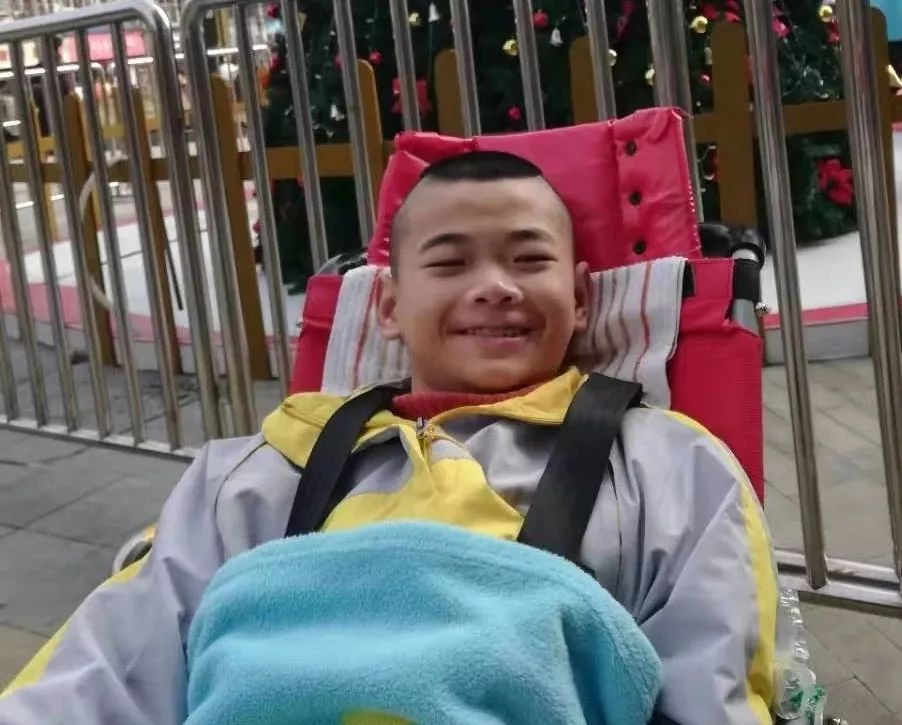
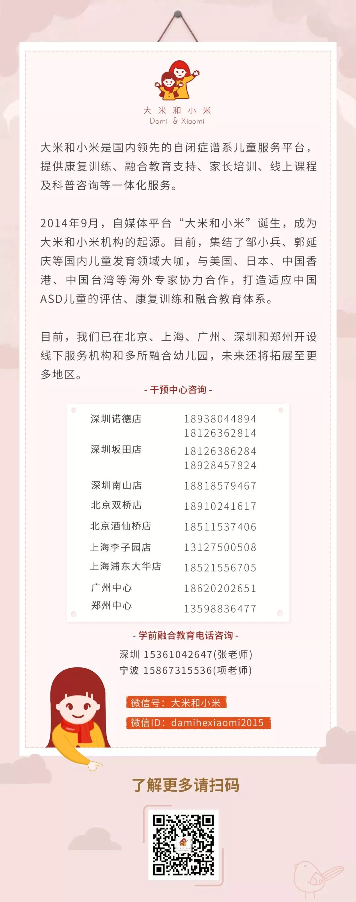

父亲被隔离 6 天后，疫情阴影下的残障少年之死
原文链接 备份链接 鄢宏伟会喂哥哥吃饭，会给鄢成盖被子，当鄢成的头从床上滑下来了，弟弟会扶着哥哥归位。「当初鄢爸生老二，也有让弟弟照顾哥哥的意图。」朱文沁说。 鄢小文有意训练弟弟，照顾哥哥。他想着，当自己哪天不在了，就得靠兄弟俩相依为命。 …

在最后一刻，鄢小文放弃了司法鉴定，选择接受了有关方面的调解以及补偿方案。他选择接受调解方案的初衷非常简单，只希望鄢成可以走得安静，平静。
在儿子鄢成离世九天里，一直陪伴着鄢小文以及参与有关部门进行谈判的雷建威律师、刘珒律师、大米以及蜗牛家园的负责人朱文沁均表示了对鄢小文这一举动的理解。
2月6日上午，鄢成的尸体已经火化，有关方面补偿款也已到账。
应大米之邀，仍然被隔离在病房的鄢小文一字一句在微信端敲下了他想对外界说的话。

儿子走后，我最懊悔的是……
文|鄢小文
17岁脑瘫少年鄢成的父亲
武汉心智障碍群体公益组织“蜗牛家园”骨干家长
今天是元宵，祝大家节日安好，我已经连续四五天没再发烧了，各方面的症状都在减轻，宏伟的安置隔离也得到了比较妥善的安排，2月3日他就被接到了另一个医院，由一名护理人员和特教老师照料。
想他的时候，我就忍不住拨通护理人员的微信视频，可不知道是不是手机的视觉提示不够明显，这小子大多数时候都不怎么搭理我，只忙着看他的动画片……
这时候，我又总忍不住想到他的哥哥——鄢成，尽管不会说话，但只要看到他，他就会立即绽放出大大的笑脸，整宿整宿，我躺在床上，睁眼闭眼，脑海里都是他的笑脸。
鄢成笑得越开心，就越发让我痛苦，别人都夸我是个好父亲，一直把鄢成照顾得干干净净、体体面面的，可是这哪里够呢？
如果我是个有能耐的父亲，鄢成或许可以康复得更好，可以实现一定程度的自理，那么他的生活质量可能就会更好，甚至他都可能不会死在这场灾难里。
鄢成死在冠状病毒横行的2020年，出生在非典祸民的2003年。他多灾多难的一生，从他出生那一刻就开始了。
我爱人生鄢成的时候，遇到了难产，当时孩子是医生用钳子夹出来的。一出生，鄢成就被送进了ICU的保温箱，当时非典很严重，我们只能在玻璃外面守着他，在保温箱里待了21天，鄢成才回到了我们怀里。
那时候我们什么都不懂，只以为保住了他的命就是最好的结果了，结果，鄢成半岁了才被诊断为重度脑瘫。
现在想来，我唯一无悔的就是从没放弃过鄢成，村里很多人一直劝我放弃了，但我们夫妻还是坚持带着孩子康复，我当时一个月工资1200，而鄢成一个月的康复就是我半年的收入。
我们存的几万块钱，几个月的康复就花光了，我跟爱人常常靠吃馒头配开水、咸菜过日子。
一直坚持到了2009年，宏伟出生后，鄢成的康复治疗就几乎被放下了。2015年，我又下岗了，找不到工作，只能带着他们兄弟俩靠低保和社会的接济为生。
因此，这么多年来，我对鄢成只有无尽的愧疚。
鄢成走后，我向政府提的前两条要求，第一是鄢成的后事等我出院后再办理；第二是我想把鄢成的遗体捐献出来。
但由于疫情严重，这两个愿望都实现不了，目前我的家乡红安，疫情严重，各方面的防治工作也都很困难，我也只能劝自己放下，换位思考，以大局为重。
这些天来，我常常失眠，我是多么希望鄢成能留下一点东西在这个世上啊！
鄢成走后，除了懊悔没能给他提供理想的康复和生活外，我懊悔的还有，我一直保持的沉默。这么多年，我带着孩子悄悄生活在世人看不到的角落里，等人发声，等国家政策倾斜。
可经历了鄢成的死后，我才深刻地看到，心智障碍家长，甚至家长组织的力量依然很弱小，而政策也不是等来的。
无论是鄢成在世时，还是去世后，都得到了心智障碍圈里很多人的帮助，我没有能力承诺如何报答别人，只求以后一定要站出来，尽自己最大的努力，去为这个圈做更有意义的事情，鄢成在冥冥中也一定会支持爸爸，因为他对这个世界一直是感恩的。
借此机会，我也恳求家长们能够团结起来，力朝一处使，一个拳头打出去，我们发出的声音才能影响更多人，从而推动国家政策为我们的孩子和家庭，提供实实在在的支持和帮助体系。
而如果鄢成的死能为这个体系的建立，贡献一点点力量，那他也算死得有意义了。
鄢成以惨痛的生命之殇，凸显了巨大的社会价值

文|雷建威
广东省残疾人联合会副主席
广东省智力残疾人及亲友协会会长
广东诺臣律师事务所创始合伙人
颇感欣慰鄢爸接受了我们协助调解的结果。
这是一个特殊的时期，疫情紧张，每一个有良知的人都在为受灾人群揪心。我自己是十多年的志愿者，汶川和玉树地震时都去过一线赈灾，故这次也不愿袖手旁观，特别希望能做点有价值的事。
鄢成一家代表了一个特殊群体——残疾人及其家属，我在广东省智力残疾人及亲友协会担当工作，一直与智障人士及其家人打交道，深深感受他们的种种不易。我与鄢小文同为家长，就是同路人，危难之时相互搀扶，自是义不容辞。
而且他们一家的故事让我动容，鄢小文的大儿子脑瘫，小儿子自闭，太太无法面对而选择轻生……鄢小文十多年来舔犊情深，尽己所能照顾两个孩子，真的是个“中国好爸爸”，他家有难，尤其必须帮。
最后，鄢成的死的确冤！咱们心智障碍领域那么多厉害的人物组了一个支援团在背后鼎力支持，地方残联也给予了诸多的协助，终究未能阻挡悲剧的发生……这当中有关方必然存在着开脱不了的重大责任，法律的专业背景提醒我，必须要为鄢成之死讨要公道！
应该说，我们律师团队参与后，看到有关方面还是勇于面对过错、承担责任，从事后红安县委很快对相关干部问责免职可见一斑，调解工作较为顺利，双方摆出方案，很快就达成一致，补偿金也是迅速到账。
鄢成事件，也带动社会很多的思考，让全国各地残联进一步在疫情防控工作中，加强了对被确诊、被隔离残疾人及其家属的看护照顾问题的关注和重视，也直接促进北京市晓更助残公益基金会，启动了由全国数以百计的家长组织共同参与构建的特殊需要困难家庭紧急救助机制。
鄢成以惨痛的生命之殇，凸显了巨大的社会价值。
调解后鄢成已入土为安，希望鄢小文尽快走出阴霾，尽快康复痊愈出院，祝弟弟宏安健康快乐成长！鄢成在天有灵，请安息吧！
鄢成走后，我想问的和我看到的
文|朱文沁
武汉心智障碍群体公益组织“蜗牛家园”负责人
整个“鄢成事件”的亲历者、参与者
鄢成走后，众多媒体报道让事件引发了大量的关注，但如何帮他做好善后，仍是我们的一大难题。
我一度很迷惘无助，尤其是和鄢爸沟通不畅的时候，我觉得自己就快要不行了，撑不下去了。其间，我曾发过好几次求助信息给外界。幸亏有大米和雷建威主席从精神上到专业上的支持，我才又找到了方向。所以我想特别这两个人（团队），感谢大米的帮助和担当，感谢雷主席所在的广东诺臣律师事务所这个非常有正义感的团队。
回顾整个鄢成事件，我也不禁想问：
如果没有一个健全的完善保障体系，当灾难来临的时候，我们的家庭，我们的孩子往往不堪一击，谁来做我们的防护墙？是否这个体系的进步都得付出血和泪的代价？
在这次事件中，所有出来援助的都是家长，而非政府方面，我们家长群体的代表是否能被吸纳进残联系统或者民政系统，真正做到有责任，有监督？
同时，我也看到这次事件暴露两个层面的问题，第一，面对疫情，前期的宣传和防控措施不到位，地方政府部门无预案，面临大事件不知所措，无作为；另一方面，残疾人保障也做得不到位，关心残疾人流于表面文章，真正的困难来临时，没有及时拿出处理办法。原来，对残疾人的关爱不是一两句口号，而是关系到他们的吃喝拉撒睡生病。
去年，曾经听到过一个这样的统计数据，重度残疾人在父母亲离世后平均存活率是一年。身为家长，我们痛心忧虑的同时，也不能等、不能靠，实际上暂时我们也等不得、靠不得。从现在开始，我们要为我们的身后安排做点实实在在的事情，因为明天我们永远无法预料。
监护人不在时
谁能够承担照料残疾人的责任
文|刘珒
广东诺臣律师事务所律师
鄢成案中替鄢家争取权益的调解律师
我是土生土长的湖北人，能够参与到本次纠纷解决的进程中，帮助鄢成爸爸与相关责任方调解并取得效果，我觉得自己做了一件有意义的事。
我参与本案时，17岁的鄢成已经去世了。力之所及的是通过民事救济的方式为鄢成爸爸拿到合法合理的赔偿。但不管怎么努力，鄢成离世的事实都无法改变。
我想：这是个案吗？这是意外吗？
不是。在鄢成爸爸被隔离时，由于鄢成生活不能自理，此时，照料鄢成生活的“监护人”是缺位的。
好像各方都在为照料鄢成付出努力，但结果告诉我们，各方的努力都不够。
那么，“监护人”不在的时候谁能够承担照料残疾人的责任呢？这方面的主体缺位，机制缺失是造成悲剧的根本原因。解决这个问题，需要全社会的努力。
而本案最让人痛心的是“是不为也，非不能也！”我们明明有妥善照料鄢成的能力，却因为防护物资不足，医护人员害怕感染不愿照料鄢成。
从1月22日到1月29日，整整7天没有解决照料鄢成的问题。一再的拖延错过了救治的良机，为什么？因为这个群体缺乏关爱、缺乏机制保障、缺乏呼救渠道。
鄢成的离去为所有残障群体打开了一扇权利救济的窗口，引来社会的聚焦，人民的关注。我相信，今天的权利救济只是一个开始，让我们更多的关注残疾人群体，让这个世界更有温度。
雷建威律师作为广东诺臣律师事务所的创始合伙人，自2002年创所以来，一直倡导全所员工积极参加社会公益活动。鄢成爸爸能够信任我们，委托我们提供法律服务，是我们的荣幸。
作为法律人，我们倡导社会的公平正义，希望通过个案代理实现制度设计者埋藏在法律条文中的正义。每个诺臣人都愿意为残障群体伸出援手，以我们的专业服务帮助他们维护合法权利。
朱文沁女士是位典型的湖北热心肠，此次事件中，她像高音喇叭一样不断为鄢成呼救，手机发出了无数个求援电话、短信，最终引起了社会对鄢成的关注；鄢成去世后，她不停地为鄢成爸爸提供心理疏导，帮助他维护权利。我为有你这样的老乡而倍感骄傲。
感谢大米和小米以及参与报道此事的媒体朋友，社会的良好运行离不开媒体的监督与宣传，是你们的呐喊呼救引来了各方关注，是你们的每篇报道让我们热泪盈眶，是你们作为媒体人的坚持打开了残疾人维权的新窗口。
你们的工作让我们觉得社会在不断进步，有你们在，真好！期盼读到你们更多的报道。
点击阅读湖北红安脑瘫鄢成相关文章：
湖北17岁脑瘫儿死亡前一天，父亲多次拨打120和110求助无果
-完-

长按二维码向我转账
她每天都在为特殊孩子家庭努力
受苹果公司新规定影响，微信 iOS 版的赞赏功能被关闭，可通过二维码转账支持公众号。
原文链接 备份链接 鄢宏伟会喂哥哥吃饭，会给鄢成盖被子，当鄢成的头从床上滑下来了，弟弟会扶着哥哥归位。「当初鄢爸生老二，也有让弟弟照顾哥哥的意图。」朱文沁说。 鄢小文有意训练弟弟，照顾哥哥。他想着，当自己哪天不在了，就得靠兄弟俩相依为命。 …
原文链接 备份链接 意识到17岁脑瘫少年鄢成被单独留在家中的时候，很多人试图挽救这条生命，但这些帮助最终没有抵达最后一公里。这个由脑瘫、自闭症和单亲父亲组成的特殊家庭的日常困境，在遇到突发疫情的乡村被放大了。 记者 | 董冀宁 陈璐 被留 …
原文链接 备份链接 Original 李怀 真实故事计划 真实故事计划 About Feature 每天一个打动人心的原创真实故事。 Yesterday 方青记得，29日下午，鄢小文给她打电话，“孩子终于被接走了”——他的心情”特别高 …
原文链接 备份链接 1月29日中午，湖北黄冈17岁脑瘫儿鄢成死了。晚上，他死亡的消息登上了微博热搜，引发全国关注。 同一天，因新型冠状病毒肺炎死亡的中国病例已经累计170例，共有7711人被确诊。疑似病例达12167例。 鄢成的单身父亲鄢 …
原文链接 备份链接 **作者|梁耀丹 ** 1月23日，疑似感染新冠病毒肺炎的鄢小文被带走隔离时，未曾想到这竟是与17岁的脑瘫儿子鄢成的最后一次见面。 鄢小文放心不下独自在家、生活无法自理的鄢成，于是向外界求助。接下来一周的时间里，历经 …